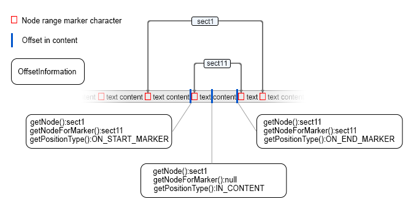

Interface AuthorDocumentController
- All Superinterfaces:
AuthorAttributesController,AuthorPseudoClassController
-
Method Summary
Modifier and TypeMethodDescriptionvoidaddAuthorListener(AuthorListener listener) Add an Author listener to be notified about changes regarding the document and the document structure.voidDeprecated.voidaddClipboardFragmentProcessor(ClipboardFragmentProcessor clipboardFragmentProcessor) Add a processor which can analyze and modifyAuthorDocumentFragmentobjects before they are inserted in the Author.voidaddPersistentHighlightsFilter(AuthorPersistentHighlightsFilter persistentHighlightsFilter) Deprecated.voidaddUniqueAttributesProcessor(UniqueAttributesProcessor uniqueAttributesProcessor) Add a processor which is asked to automatically generate unique IDs after content has been inserted in the Author.voidBegin a compound edit.voidCancel the current compound edit.createDocumentFragment(int startOffset, int endOffset) Create an Author content fragment containing a clone of the document content for the given range of offsets.createDocumentFragment(int startOffset, int endOffset, boolean preserveTrackChange) Create an Author content fragment containing a clone of the document content for the given range of offsets.createDocumentFragment(AuthorNode node, boolean copyContent) Create a document fragment containing a copy of the node.createElement(String qName) Creates an element.createNewDocumentFragmentInContext(String xmlFragment, int contentOffset) Create a newAuthorDocumentFragmentfrom an XML string in a specified context.createNewDocumentFragmentsInContext(String[] xmlFragments, int[] contentOffsets) Create an array ofAuthorDocumentFragmentfrom an array of XML strings in specified contexts.createNewDocumentTextFragment(String textFragment) Create a newAuthorDocumentFragmentfrom an string.createPositionInContent(int offset) Create a flexible position in the Author Content.booleandelete(int startOffset, int endOffset) Deletes a document fragment between the start and end offset.booleandelete(int startOffset, int endOffset, boolean backspace) Deletes a document fragment between the start and end offset.booleandeleteNode(AuthorNode node) Delete a node.voidINTERNAL USE ONLY.voidenableLayoutUpdate(AuthorNode ancestorOfChanges) INTERNAL USE ONLY.voidEnd a compound edit.Object[]evaluateXPath(String xpathExpression, boolean ignoreTexts, boolean ignoreCData, boolean ignoreComments) Evaluates an XPath 2.0 expression.Object[]evaluateXPath(String xpathExpression, boolean ignoreTexts, boolean ignoreCData, boolean ignoreComments, boolean processChangeMarkers) Evaluates an XPath 2.0 expression.Object[]evaluateXPath(String xpathExpression, AuthorNode contextNode, boolean ignoreTexts, boolean ignoreCData, boolean ignoreComments, boolean processChangeMarkers) Evaluates an XPath 2.0 expression.Object[]evaluateXPath(String xpathExpression, AuthorNode contextNode, boolean ignoreTexts, boolean ignoreCData, boolean ignoreComments, boolean processChangeMarkers, XPathVersion xpathVersion) Evaluates an XPath expression.findNodesByXPath(String xpathExpression, boolean ignoreTexts, boolean ignoreCData, boolean ignoreComments) Finds the author nodes selected by the given XPath 2.0 expression.findNodesByXPath(String xpathExpression, boolean ignoreTexts, boolean ignoreCData, boolean ignoreComments, boolean processChangeMarkers) Finds the author nodes selected by the given XPath 2.0 expression.findNodesByXPath(String xpathExpression, AuthorNode contextNode, boolean ignoreTexts, boolean ignoreCData, boolean ignoreComments, boolean processChangeMarkers) Finds the author nodes selected by the given XPath 2.0 expression.findNodesByXPath(String xpathExpression, AuthorNode contextNode, boolean ignoreTexts, boolean ignoreCData, boolean ignoreComments, boolean processChangeMarkers, XPathVersion xpathVersion) Finds the author nodes selected by the given XPath expression.findNodesByXPath(String xpathExpression, AuthorNode contextNode, boolean ignoreTexts, boolean ignoreCData, boolean ignoreComments, boolean processChangeMarkers, XPathVersion xpathVersion, boolean transparentReferences) Finds the author nodes selected by the given XPath expression.Returns the edited author document.voidThe content represents the entire text content of the Author page + additional markers/sentinels at offsets which are pointed to by the AuthorNodes.getCommonAncestor(AuthorNode[] nodes) Get the common parent for the nodes.getCommonParentNode(AuthorDocument doc, int startOffset, int endOffset) Find the common ancestor node of the two offsets.Retrieves a char sequence over the entire content of the document containing the text nodes and node markers.
The content represents the entire text content of the Author page + additional markers/sentinels at offsets which are pointed to by the AuthorNodes.getContentInformationAtOffset(int offset) Returns content information for the offset.Returns information about the internal associated document type.Gets theAuthorDocumentFilterwhich is currently set for altering the document edits.getFilteredContent(int start, int end, AuthorNodesFilter nodesFilter) Retrieves the content between the given start and end offset, excluding the content of the invisible nodes (that have display none style property), the content deleted with track changes, the sentinels of inline elements and the
The filtered nodes are the nodes for whichAuthorNodesFilter.shouldFilterNode(AuthorNode)returnstrue.getFilteredText(int offset, int length) Gets a sequence of text from the document content.getNodeAtOffset(int offset) Returns the node at the given offset.getNodesToSelect(int selectionStart, int selectionEnd) Compute the list with nodes to select when a selection is present in editor.getStrictCommonAncestor(AuthorNode[] nodes) Get a node that is a strict ancestor for all the nodes in the given array.getText(int offset, int length) Deprecated.Please use the APIgetContentCharSequence().getTextContentIterator(int startOffset, int endOffset) Get an iterator over the text content between two offsets.intDeprecated.Use the API based on theAuthorNodeto get the length of the displayed text only, without mark-up markers.Get access to the Author undo manager.Get the compound unique attributes processor which can be asked if a certain attribute should get copied on a split.getUnparsedEntityUri(AuthorNode contextNode, String entityName) Returns the URI of the unparsed entity with the specified name, in the same document as the context node.getXPathExpression(int offset) Returns the XPath expression of the node identified by the given offset.getXPathExpression(int offset, boolean processChanges) Returns the XPath expression of the node identified by the given offset.getXPathExpressionBuilder(int offset) Returns a builder to generate an XPath expression of the node identified by the given offset.intgetXPathLocationOffset(String xpathLocation, String relativePosition) Compute the document offset defined by the XPath location and relative position.intgetXPathLocationOffset(String xpathLocation, String relativePosition, boolean processChangeMarkers) Compute the document offset defined by the XPath location and relative position.booleaninInlineContext(int offset) Test if the context at the givenoffsetis inline(as defined in the CSS specs) or not.booleaninsertElement(int caretOffset, AuthorNode element) Insert a simple element, at the specified offset in the document.voidinsertFragment(int insertOffset, AuthorDocumentFragment frag) Insert anAuthorDocumentFragmentat the given offset.insertFragmentSchemaAware(int insertOffset, AuthorDocumentFragment frag) Insert anAuthorDocumentFragmentat the given offset in schema aware mode.voidinsertMultipleElements(AuthorElement parentElement, String[] elementNames, int[] offsets, String namespace) Insert multiple elements at the given offsets.booleaninsertMultipleFragments(AuthorElement parentElement, AuthorDocumentFragment[] fragments, int[] offsets) Insert multiple fragments at the given offsets.voidinsertText(int offset, String text) Inserts a text at the given offset.voidinsertXMLFragment(String xmlFragment, int offset) Insert an XML fragment at the given offset.voidinsertXMLFragment(String xmlFragment, String xpathLocation, String relativePosition) Insert an XML fragment relative to the node identified by thexpathLocationand according with therelativePosition.voidinsertXMLFragment(String xmlFragment, AuthorNode relativeTo, String relativePosition) Insert an XML fragment relative to the given node and according with therelativePosition.insertXMLFragmentSchemaAware(String xmlFragment, int offset) Insert an XML fragment at the given offset in schema aware mode.insertXMLFragmentSchemaAware(String xmlFragment, int offset, boolean replaceSelection) Insert an XML fragment at the given offset in schema aware mode.insertXMLFragmentSchemaAware(String xmlFragment, int offset, int actionID, boolean replaceSelection) Insert an XML fragment at the given offset in schema aware mode.insertXMLFragmentSchemaAware(String xmlFragment, String xpathLocation, String relativePosition) Insert an XML fragment relative to the node identified by thexpathLocationand according with therelativePosition.insertXMLFragmentSchemaAware(String xmlFragment, String xpathLocation, String relativePosition, boolean insertEvenIfInvalid) Insert an XML fragment relative to the node identified by thexpathLocationand according with therelativePosition.booleanisEditable(AuthorNode node) Test if a node is editable or not.voidmarkSelection(List<int[]> newSelection, int newCaretOffset, SelectionInterpretationMode newSelectionType, List<int[]> oldSelection, int oldCaretOffset, SelectionInterpretationMode oldSelectionType) Add Author editor page selection intervals and marks the caret offset.voidmultipleDelete(AuthorElement parentElement, int[] startOffsets, int[] endOffsets) Deletes the given intervals.booleanprocessContentRange(int startOffset, int endOffset, RangeProcessor rangeProcessor) This method is useful if you want to make text processing on a given Author selection.voidRefresh node references recursively.voidremoveAttribute(String attributeName, AuthorElement element) Removes an attribute from the given element.voidremoveAuthorListener(AuthorListener listener) Remove an Author listener.voidvoidremoveClipboardFragmentProcessor(ClipboardFragmentProcessor clipboardFragmentProcessor) Remove a processor which can analyze and modifyAuthorDocumentFragmentobjects before they are inserted in the Author.voidremovePseudoClassUndoable(String pseudoClass, AuthorElement element) Removes a pseudo class from the given element.voidremoveUniqueAttributesProcessor(UniqueAttributesProcessor uniqueAttributesProcessor) Remove a processor which is asked to automatically generate unique IDs after content has been inserted in the Author.voidrenameElement(AuthorElement contextNode, String newName) Rename an Author Element, set another qualified name to it.voidreplaceRoot(AuthorDocumentFragment fragment) Replace the current root element with the new given one.serializeFragmentToXML(AuthorDocumentFragment fragment) Takes the given fragment and serializes it to XML text in the context of the current document.voidsetAttribute(String attributeName, AttrValue value, AuthorElement element) Sets the value of an attribute in the specified element.voidsetDoctype(AuthorDocumentType docType) Set a new internal document type to the Author content.voidsetDocumentFilter(AuthorDocumentFilter authorDocumentFilter) Sets theAuthorDocumentFilterto be used for altering the document edits.
WARNING: If filters are set by two or more plugins or customizations, only the last set filter will be taken into account.voidsetMultipleAttributes(int parentElementStartOffset, int[] elementOffsets, Map<String, AttrValue> attributes) Sets the value of the given attribute in the specified elements.voidsetMultipleDistinctAttributes(int parentElementStartOffset, int[] elementOffsets, List<Map<String, AttrValue>> attributes) For each element look at the corresponding map of attributes from the list and set it on the element.voidsetPseudoClassUndoable(String pseudoClass, AuthorElement element) Sets a pseudo class in the specified element.voidSets the listener to be notified when the rendering info of a node has changed.booleansplit(AuthorNode toSplit, int splitOffset) Split the node at the given offset.voidsurroundInFragment(String xmlFragment, int startOffset, int endOffset) Surround the content between the given offsets with thexmlFragment.voidsurroundInFragment(AuthorDocumentFragment xmlFragment, int startOffset, int endOffset) Surround the content between the given offsets with thexmlFragment.voidsurroundInText(String header, String footer, int startOffset, int endOffset) Surround the content between the given offsets with plain text fragments(without XML parsing).unwrapDocumentFragment(AuthorDocumentFragment fragmentToUnwrap) Unwrap a given Author document fragment.Methods inherited from interface ro.sync.ecss.extensions.api.AuthorPseudoClassController
removePseudoClass, setPseudoClass
-
Method Details
-
delete
boolean delete(int startOffset, int endOffset) Deletes a document fragment between the start and end offset.
The author content contains the entire XML document text and special marker characters. Each author node points in the content to the start and end marker characters which are used to delimit it's range. The start and end offsets pointed to by the AuthorNode can be retrieved using the AuthorNode.getStartOffset() and AuthorNode.getEndOffset()

The image represents part of the document content and red markers represent special control characters which represent the node ranges.- Parameters:
startOffset- Start offset, 0 based, inclusive.endOffset- End offset, 0 based, inclusive.- Returns:
trueif the delete operation was successful.
-
delete
boolean delete(int startOffset, int endOffset, boolean backspace) Deletes a document fragment between the start and end offset.
The author content contains the entire XML document text and special marker characters. Each author node points in the content to the start and end marker characters which are used to delimit it's range. The start and end offsets pointed to by the AuthorNode can be retrieved using the AuthorNode.getStartOffset() and AuthorNode.getEndOffset()
The image represents part of the document content and red markers represent special control characters which represent the node ranges.- Parameters:
startOffset- Start offset, 0 based, inclusive.endOffset- End offset, 0 based, inclusive.backspace-trueif delete operation was triggered by the user pressing the backspace key.- Returns:
trueif the delete operation was successful.
-
deleteNode
Delete a node.- Parameters:
node- TheAuthorNodeto delete.- Returns:
trueif the delete node operation was successful.
-
replaceRoot
Replace the current root element with the new given one. The fragment must contain only one element, otherwise the replacement will not be performed.- Parameters:
fragment- The document fragment containing the new root element.
-
createDocumentFragment
AuthorDocumentFragment createDocumentFragment(int startOffset, int endOffset) throws BadLocationException Create an Author content fragment containing a clone of the document content for the given range of offsets.
The offset ranges must be from the current AuthorDocument.
The change tracking markers are automatically accepted in the fragment if change tracking is enabled in the document.
The Author content contains the entire XML document text and special marker characters. Each author node points in the content to the start and end marker characters which are used to delimit it's range. The start and end offsets pointed to by the AuthorNode can be retrieved using the AuthorNode.getStartOffset() and AuthorNode.getEndOffset()
The image represents part of the document content and red markers represent special control characters which represent the node ranges.- Parameters:
startOffset- The start offset, 0 based, inclusive.endOffset- The end offset, 0 based, inclusive.- Returns:
- A new
AuthorDocumentFragment. It does not return anullfragment. - Throws:
BadLocationException- When the offsets are not between 0 and the content length, or thestartOffsetis greater than theendOffset.
-
createDocumentFragment
AuthorDocumentFragment createDocumentFragment(int startOffset, int endOffset, boolean preserveTrackChange) throws BadLocationException Create an Author content fragment containing a clone of the document content for the given range of offsets.
The offset ranges must be from the current AuthorDocument.
The Author content contains the entire XML document text and special marker characters. Each author node points in the content to the start and end marker characters which are used to delimit it's range. The start and end offsets pointed to by the AuthorNode can be retrieved using the AuthorNode.getStartOffset() and AuthorNode.getEndOffset()
The image represents part of the document content and red markers represent special control characters which represent the node ranges.- Parameters:
startOffset- The start offset, 0 based, inclusive.endOffset- The end offset, 0 based, inclusive.preserveTrackChange-trueto preserve track changes exactly as they are, no matter if change tracking is enabled or disabled.falseto preserve the changes if change tracking is disabled or to automatically accept them if change tracking is enabled.- Returns:
- A new
AuthorDocumentFragment. It does not return anullfragment. - Throws:
BadLocationException- When the offsets are not between 0 and the content length, or thestartOffsetis greater than theendOffset.- Since:
- 23
-
createNewDocumentFragmentInContext
AuthorDocumentFragment createNewDocumentFragmentInContext(String xmlFragment, int contentOffset) throws AuthorOperationException Create a newAuthorDocumentFragmentfrom an XML string in a specified context.
The author content contains the entire XML document text and special marker characters. Each author node points in the content to the start and end marker characters which are used to delimit it's range. The start and end offsets pointed to by the AuthorNode can be retrieved using the AuthorNode.getStartOffset() and AuthorNode.getEndOffset()
The image represents part of the document content and red markers represent special control characters which represent the node ranges.- Parameters:
xmlFragment- The XML Fragment.contentOffset- The offset where the XML fragment should be inserted. This method doesn't perform any insertion. This parameter is used to resolve entities and default attribute values from the DTD in the specified XML fragment.- Returns:
- The newly created
AuthorDocumentFragment. It does not return anullfragment. - Throws:
AuthorOperationException- If the new fragment creation fails.
-
createNewDocumentFragmentsInContext
AuthorDocumentFragment[] createNewDocumentFragmentsInContext(String[] xmlFragments, int[] contentOffsets) throws AuthorOperationException Create an array ofAuthorDocumentFragmentfrom an array of XML strings in specified contexts.
This method should be used when multiple Author document fragments must be created. In this situation the fragments are created faster than creating each of them by callingcreateNewDocumentFragmentInContext(String, int)method.
The author content contains the entire XML document text and special marker characters. Each author node points in the content to the start and end marker characters which are used to delimit it's range. The start and end offsets pointed to by the AuthorNode can be retrieved using the AuthorNode.getStartOffset() and AuthorNode.getEndOffset()
The image represents part of the document content and red markers represent special control characters which represent the node ranges.- Parameters:
xmlFragments- The array of XML fragments.contentOffsets- The offsets where the XML fragments should be inserted. The xml fragments and context offsets arrays must have the same size. The nth offset corresponds to the nth xml fragment.- Returns:
- The newly created
AuthorDocumentFragment. It does not return anullfragment. - Throws:
AuthorOperationException- If the xml fragments and context offsets sizes are different or a fragment creation fails.- Since:
- 14
-
createNewDocumentTextFragment
AuthorDocumentFragment createNewDocumentTextFragment(String textFragment) throws AuthorOperationException Create a newAuthorDocumentFragmentfrom an string. The returned fragment will contain only a text node and if the text fragment contains mark-up, it will be escaped. If the text has mark-up and you actually want to create author nodes from it then you should usecreateNewDocumentFragmentInContext(String, int).- Parameters:
textFragment- The text fragment.- Returns:
- The newly created
AuthorDocumentFragmentholding the text node. If the text fragment contains mark-up, it will be escaped. It does not return anullfragment. - Throws:
AuthorOperationException- If the new fragment creation fails.
-
serializeFragmentToXML
Takes the given fragment and serializes it to XML text in the context of the current document. The following code example extracts the selection as an XML fragment, processes and then reinserts it:if(authorAccess.getEditorAccess().hasSelection()) { AuthorDocumentController documentController = authorAccess.getDocumentController(); AuthorDocumentFragment selectionAsAFragment = documentController.createDocumentFragment( authorAccess.getEditorAccess().getSelectionStart(), authorAccess.getEditorAccess().getSelectionEnd()); String selectionAsXML = documentController.serializeFragmentToXML(selectionAsAFragment); //Deletes the selection authorAccess.getEditorAccess().deleteSelection(); //Process the selectionAsXML fragment, modify it. //................ //Insert the XML fragment back at caret position. documentController.insertXMLFragment(selectionAsXML, authorAccess.getEditorAccess().getCaretOffset()); }
If the fragment contains change tracking highlights, they will be serialized as processing instructions.- Parameters:
fragment- TheAuthorDocumentFragmentto serialize.- Returns:
- An equivalent
Stringrepresentation of the given fragment. It does not return anullString. If the fragment cannot be serialized it will return an empty String. - Throws:
BadLocationException- If the serialization could not be accomplished, usually because the fragment was not properly built.
-
setAttribute
Sets the value of an attribute in the specified element. If the element does not have the attribute specified by name, then an attribute with the specified value will be automatically created.
Attributes set in this manner (as opposed to callingAuthorElement.setAttribute(String, AttrValue)directly) will be subject to undo/redo.- Specified by:
setAttributein interfaceAuthorAttributesController- Parameters:
attributeName- Name of the attribute being changed.value- NewAttrValuefor the attribute. Ifnull, the attribute is removed from the element.element- TheAuthorElementwhose attribute is changing.
-
setMultipleAttributes
void setMultipleAttributes(int parentElementStartOffset, int[] elementOffsets, Map<String, AttrValue> attributes) Sets the value of the given attribute in the specified elements. Attributes set in this manner will be subject to undo/redo.- Parameters:
parentElementStartOffset- The start offset of the parent element.elementOffsets- The start offset for each element.attributes- The list with attributes. Every attribute name is mapped to anAttrValueobject. If the value isnull, the attribute will be removed.- Since:
- 16
-
setMultipleDistinctAttributes
void setMultipleDistinctAttributes(int parentElementStartOffset, int[] elementOffsets, List<Map<String, AttrValue>> attributes) For each element look at the corresponding map of attributes from the list and set it on the element.- Parameters:
parentElementStartOffset- The start offset of an ancestor node which contains all other elements.elementOffsets- The start offset for each element.attributes- The list with attribute sets. Every attribute name is mapped to anAttrValueobject. If the value isnull, the attribute will be removed.- Since:
- 17
-
removeAttribute
Removes an attribute from the given element. Attributes removed in this manner (as opposed to callingAuthorElement.setAttribute(String, AttrValue)directly) will be subject to undo/redo.- Parameters:
attributeName- Name of the attribute to remove.element- TheAuthorElementwhose attribute will be removed.
-
setPseudoClassUndoable
Sets a pseudo class in the specified element.
This change *IS* subject to undo/redo.
- Parameters:
pseudoClass- Name of the pseudo class being set.element- TheAuthorElementwhose attribute is changing.- Since:
- 21
- See Also:
-
removePseudoClassUndoable
Removes a pseudo class from the given element. This change *IS* subject to undo/redo.- Parameters:
pseudoClass- Name of the pseudo class being set.element- TheAuthorElementwhose attribute will be removed.- Since:
- 21
-
getNodeAtOffset
Returns the node at the given offset. The given offset must be greater or equal to 0 and less than the current document length.
Note: If the caret has the offset of an element's start offset marker character, it is considered to be before the element.
If the caret has the offset of an element's end offset marker character, it is considered to be inside the element.
The author content contains the entire XML document text and special marker characters. Each author node points in the content to the start and end marker characters which are used to delimit it's range. The start and end offsets pointed to by the AuthorNode can be retrieved using the AuthorNode.getStartOffset() and AuthorNode.getEndOffset()
The image represents part of the document content and red markers represent special control characters which represent the node ranges.- Parameters:
offset- The offset in the content, zero based.- Returns:
- The
AuthorNodecontaining the offset, ornullwhen the actual document isnull. - Throws:
BadLocationException- When the offset is negative or greater than the content length.
-
getContentInformationAtOffset
Returns content information for the offset. If the offset is on a marker character the returned result will also contain the node which contains the range indicated by the marker.- Parameters:
offset- The offset in the content, zero based.- Returns:
- content information for the offset.

The author content contains the entire XML document text and special marker characters. Each author node points in the content to the start and end marker characters which are used to delimit it's range. The start and end offsets pointed to by the AuthorNode can be retrieved using the AuthorNode.getStartOffset() and AuthorNode.getEndOffset() The image represents part of the document content and red markers represent special control characters which represent the node ranges. - Throws:
BadLocationException- Since:
- 12.2
-
createDocumentFragment
AuthorDocumentFragment createDocumentFragment(AuthorNode node, boolean copyContent) throws BadLocationException Create a document fragment containing a copy of the node. The node must be from the current AuthorDocument. The attributes of the elements will be copied. IfcopyContentistruethe node content will be copied also.- Parameters:
node- TheAuthorNodeto be duplicated.copyContent- Iftruethe content of the node will also be duplicated.- Returns:
- The
AuthorDocumentFragmentcontaining the duplicated node. It does not return anullfragment. - Throws:
BadLocationException- When the operation fails.
-
getText
Deprecated.Please use the APIgetContentCharSequence().Gets a sequence of text from the document text content. The document text content can be obtained by adding all the text nodes content.
Theoffsetis considered to be relative to the text content start offset. So the 0 offset corresponds to the offset of the first valid char in the document.
Thelengthrepresents also a number of valid chars encountered after the real start offset was determined.
For the document:
[?PI?][article][!COMMENT][para]PARAGRAPH[/para][/article]
getText(0, 18)returns "PICOMMENTPARAGRAPH"
getText(5, 8)returns "MENTPARA"- Parameters:
offset- The starting offset >= 0.length- The number of characters to retrieve >= 0- Returns:
- The text
- Throws:
BadLocationException- The range given includes a position that is not a valid position within the document text content.
-
getTextContentLength
Deprecated.Use the API based on theAuthorNodeto get the length of the displayed text only, without mark-up markers.Returns the length of the text content of the document. This is the number of valid characters in the document text. The length can be determined by the adding all text nodes content length.
For the document:
[?PI?][article][!COMMENT][para]PARAGRAPH[/para][/article]
"PI".length() + "COMMENT".length() + "PARAGRAPH".length()
2 + 7 + 9 = 18- Returns:
- The text content length >= 0
- Throws:
BadLocationException
-
getUndoManager
UndoManager getUndoManager()Get access to the Author undo manager.- Returns:
- The Author undo manager. The returned undo manager cannot be
null.
-
beginCompoundEdit
void beginCompoundEdit()Begin a compound edit. This method should be called to signal to the editing support that a complex editing operation begins. The editing operations that occur betweenbeginCompoundEdit()andendCompoundEdit()methods calls are regarded by the UndoManager as a single operation which can be undone/redone in one step. -
endCompoundEdit
void endCompoundEdit()End a compound edit. This method should be called to signal to the editing support that a complex editing operation ends.- See Also:
-
cancelCompoundEdit
void cancelCompoundEdit()Cancel the current compound edit. This method should be called to signal to the editing support that all edits performed so far inside a current compound edit must be undone. The editing operations that occurred after the previous call tobeginCompoundEdit()will be undo by the UndoManager. Note that the compound edit does not end after a call to this method, so an explicit call toendCompoundEdit()is required.- See Also:
-
insertText
Inserts a text at the given offset. After the operation the caret will be positioned at the end of the inserted text.
The author content contains the entire XML document text and special marker characters. Each author node points in the content to the start and end marker characters which are used to delimit it's range. The start and end offsets pointed to by the AuthorNode can be retrieved using the AuthorNode.getStartOffset() and AuthorNode.getEndOffset()
The image represents part of the document content and red markers represent special control characters which represent the node ranges.- Parameters:
offset- The insert position, 0 based.text- The text to be inserted.
-
insertXMLFragment
Insert an XML fragment at the given offset. After the operation the caret will be positioned in the first leaf of the fragment.
The author content contains the entire XML document text and special marker characters. Each author node points in the content to the start and end marker characters which are used to delimit it's range. The start and end offsets pointed to by the AuthorNode can be retrieved using the AuthorNode.getStartOffset() and AuthorNode.getEndOffset()
The image represents part of the document content and red markers represent special control characters which represent the node ranges.- Parameters:
xmlFragment- The XML fragment to insert.offset- The insert position, 0 based.- Throws:
AuthorOperationException- If the fragment could not be inserted.
-
insertXMLFragment
void insertXMLFragment(String xmlFragment, String xpathLocation, String relativePosition) throws AuthorOperationException Insert an XML fragment relative to the node identified by thexpathLocationand according with therelativePosition. Note: if thexpathLocationis not specified then the XML fragment will be inserted at caret position and therelativePositionwill be ignored.After the operation the caret will be positioned in the first leaf of the fragment.
- Parameters:
xmlFragment- The XML fragment.xpathLocation- The XPath location.relativePosition- The position relative to the node identified by the XPath location. Can be one of the constants:AuthorConstants.POSITION_BEFORE,AuthorConstants.POSITION_AFTER,AuthorConstants.POSITION_INSIDE_FIRSTorAuthorConstants.POSITION_INSIDE_LAST.- Throws:
AuthorOperationException- If the fragment could not be inserted.
-
insertXMLFragment
void insertXMLFragment(String xmlFragment, AuthorNode relativeTo, String relativePosition) throws AuthorOperationException Insert an XML fragment relative to the given node and according with therelativePosition.After the operation the caret will be positioned at the end of the inserted XML fragment.
- Parameters:
xmlFragment- The XML fragment.relativeTo- The node to insert fragment relative to.relativePosition- The position relative to the node. Can be one of the constants:AuthorConstants.POSITION_BEFORE,AuthorConstants.POSITION_AFTER,AuthorConstants.POSITION_INSIDE_FIRSTorAuthorConstants.POSITION_INSIDE_LAST.- Throws:
AuthorOperationException- If the fragment could not be inserted.
-
insertXMLFragmentSchemaAware
SchemaAwareHandlerResult insertXMLFragmentSchemaAware(String xmlFragment, int offset) throws AuthorOperationException Insert an XML fragment at the given offset in schema aware mode. A normal insertion is executed when no schema is specified or schema aware feature is disable by the user (see Preferences / Editor / Pages / Author / Schema aware). If the fragments insertion is not allowed, a dialog will be shown proposing one of following solutions if they apply:- insert the fragments inside a new element. The name of the element to wrap the fragments in is computed by analyzing the
left or right siblings.
By example, for the next Docbook situation:<sect1> <title>Section title</title> {caret} <para>para content</para> </sect1>if insert a fragment like:<emphasis>text</emphasis>the proposal is to create a newparaelement and insert the fragment inside it. The proposal result will be:<sect1> <title>Section title</title> <para><emphasis>text</emphasis></para> <para>para content</para> </sect1> - split an ancestor of the node at insertion offset and insert the fragments between the resulted elements.
By example, for the next Docbook situation:<sect1> <title>Section title</title> {caret} <para>para content</para> </sect1>if insert a fragment like:<sect1>...section content...</sect1>the proposal is to split the parentsect1element and insert the fragment between the resulted sections. The proposal result will be:<sect1> <title>Section title</title> </sect1> <sect1>...section content...</sect1> <sect1> <para>para content</para> </sect1>
- insert the fragments somewhere in the proximity of the insertion offset(left or right without skipping content).
By example, for the next Docbook situation:<sect1> <title>Section title</title> {caret} <para>para content</para> </sect1>if insert a fragment like:<emphasis>text</emphasis>the proposals are to insert the fragment at the end oftitleor at beginning ofparaelement. - insert at offset the plain text resulted after removing the mark-up.
By example, for the next Docbook situation:<sect1> <title>Section title {caret}</title> </sect1>if insert a fragment like:<para>fragment <emphasis>content</emphasis></para>the proposal is to remove the fragment mark-up and insert the text 'fragment content' at caret position. The proposal result will be:<sect1> <title>Section title fragment content</title> </sect1> - insert the fragments at insertion offset, even they are not allowed.
If the developer specifies an
AuthorSchemaAwareEditingHandlerthen this handler has priority for executing the insert operation.- Parameters:
xmlFragment- The XML fragment to insert.offset- The insert position, 0 based.- Returns:
- The result of the schema aware insertion. Can be used to get the insertion offset for the given fragments.
- Throws:
AuthorOperationException- If the fragment could not be inserted.
- insert the fragments inside a new element. The name of the element to wrap the fragments in is computed by analyzing the
left or right siblings.
-
insertXMLFragmentSchemaAware
SchemaAwareHandlerResult insertXMLFragmentSchemaAware(String xmlFragment, int offset, boolean replaceSelection) throws AuthorOperationException Insert an XML fragment at the given offset in schema aware mode. A normal insertion is executed when no schema is specified or schema aware feature is disable by the user (see Preferences / Editor / Pages / Author / Schema aware). If the fragments insertion is not allowed, a dialog will be shown proposing one of following solutions if they apply:- insert the fragments inside a new element. The name of the element to wrap the fragments in is computed by analyzing the
left or right siblings.
By example, for the next Docbook situation:<sect1> <title>Section title</title> {caret} <para>para content</para> </sect1>if insert a fragment like:<emphasis>text</emphasis>the proposal is to create a newparaelement and insert the fragment inside it. The proposal result will be:<sect1> <title>Section title</title> <para><emphasis>text</emphasis></para> <para>para content</para> </sect1> - split an ancestor of the node at insertion offset and insert the fragments between the resulted elements.
By example, for the next Docbook situation:<sect1> <title>Section title</title> {caret} <para>para content</para> </sect1>if insert a fragment like:<sect1>...section content...</sect1>the proposal is to split the parentsect1element and insert the fragment between the resulted sections. The proposal result will be:<sect1> <title>Section title</title> </sect1> <sect1>...section content...</sect1> <sect1> <para>para content</para> </sect1>
- insert the fragments somewhere in the proximity of the insertion offset(left or right without skipping content).
By example, for the next Docbook situation:<sect1> <title>Section title</title> {caret} <para>para content</para> </sect1>if insert a fragment like:<emphasis>text</emphasis>the proposals are to insert the fragment at the end oftitleor at beginning ofparaelement. - insert at offset the plain text resulted after removing the mark-up.
By example, for the next Docbook situation:<sect1> <title>Section title {caret}</title> </sect1>if insert a fragment like:<para>fragment <emphasis>content</emphasis></para>the proposal is to remove the fragment mark-up and insert the text 'fragment content' at caret position. The proposal result will be:<sect1> <title>Section title fragment content</title> </sect1> - insert the fragments at insertion offset, even they are not allowed.
If the developer specifies an
AuthorSchemaAwareEditingHandlerthen this handler has priority for executing the insert operation.- Parameters:
xmlFragment- The XML fragment to insert.offset- The insert position, 0 based.replaceSelection-trueto replace the selected Author content with the fragment,falseto leave the selected content and paste at caret position.- Returns:
- The result of the schema aware insertion. Can be used to get the insertion offset for the given fragments.
- Throws:
AuthorOperationException- If the fragment could not be inserted.
- insert the fragments inside a new element. The name of the element to wrap the fragments in is computed by analyzing the
left or right siblings.
-
insertXMLFragmentSchemaAware
SchemaAwareHandlerResult insertXMLFragmentSchemaAware(String xmlFragment, int offset, int actionID, boolean replaceSelection) throws AuthorOperationException Insert an XML fragment at the given offset in schema aware mode.
The insertion behavior depends on the action type (specified by the actionID parameter) that triggered it. For more details see the description of
insertXMLFragmentSchemaAware(String, int, boolean).- Parameters:
xmlFragment- The XML fragment to insert.offset- The insert position, 0 based.actionID- The action that caused the insertion. One of the constants inAuthorSchemaAwareEditingHandler.replaceSelection-trueto replace the selected Author content with the fragment,falseto leave the selected content and paste at caret position.- Returns:
- The result of the schema aware insertion. Can be used to get the insertion offset for the given fragments.
- Throws:
AuthorOperationException- If the fragment could not be inserted.- Since:
- 17
-
insertFragment
Insert anAuthorDocumentFragmentat the given offset.
The author content contains the entire XML document text and special marker characters. Each author node points in the content to the start and end marker characters which are used to delimit it's range. The start and end offsets pointed to by the AuthorNode can be retrieved using the AuthorNode.getStartOffset() and AuthorNode.getEndOffset()
The image represents part of the document content and red markers represent special control characters which represent the node ranges.- Parameters:
insertOffset- The offset where the fragment will be inserted, 0 based.frag- TheAuthorDocumentFragmentto be inserted. Nevernull.
-
processContentRange
boolean processContentRange(int startOffset, int endOffset, RangeProcessor rangeProcessor) throws BadLocationException, AuthorOperationException This method is useful if you want to make text processing on a given Author selection. You will receive a call back which will give you the AuthorDocumentFragment to process. When finished, the range will be replaced with the processed fragment.The author content contains the entire XML document text and special marker characters. Each author node points in the content to the start and end marker characters which are used to delimit it's range.
The start and end offsets pointed to by the AuthorNode can be retrieved using the
AuthorNode.getStartOffset()andAuthorNode.getEndOffset().
The image represents part of the document content and red markers represent special control characters which represent the node ranges.
- Parameters:
startOffset- Start offset of the processed range (inclusive).endOffset- End offset of the processed range (inclusive).rangeProcessor- The range processor which gets notified to process theAuthorDocumentFragment.- Returns:
trueif the modifications were merged back in the Author content. For example when the selection cannot be replaced (inside a not-editable element) this method can returnfalse.- Throws:
BadLocationExceptionAuthorOperationException- Since:
- 12.2
-
insertFragmentSchemaAware
SchemaAwareHandlerResult insertFragmentSchemaAware(int insertOffset, AuthorDocumentFragment frag) throws AuthorOperationException Insert anAuthorDocumentFragmentat the given offset in schema aware mode. A normal insertion is executed when no schema is specified or schema aware feature is disable by the user (see Preferences / Editor / Pages / Author / Schema aware).For more details about schema aware solutions see comments from
insertXMLFragmentSchemaAware(String, int)method.
The author content contains the entire XML document text and special marker characters. Each author node points in the content to the start and end marker characters which are used to delimit it's range. The start and end offsets pointed to by the AuthorNode can be retrieved using the AuthorNode.getStartOffset() and AuthorNode.getEndOffset()
The image represents part of the document content and red markers represent special control characters which represent the node ranges.- Parameters:
insertOffset- The offset where the fragment will be inserted, 0 based.frag- TheAuthorDocumentFragmentto be inserted.- Returns:
- The result of the schema aware insertion.
- Throws:
AuthorOperationException- If the fragment could not be inserted.
-
surroundInFragment
void surroundInFragment(String xmlFragment, int startOffset, int endOffset) throws AuthorOperationException Surround the content between the given offsets with thexmlFragment. IfendOffset < startOffsetthexmlFragmentwill be inserted atstartOffset.
The author content contains the entire XML document text and special marker characters. Each author node points in the content to the start and end marker characters which are used to delimit it's range. The start and end offsets pointed to by the AuthorNode can be retrieved using the AuthorNode.getStartOffset() and AuthorNode.getEndOffset()
The image represents part of the document content and red markers represent special control characters which represent the node ranges.- Parameters:
xmlFragment- The XML fragment which will surround the given interval. The first leaf node of the XML fragment will be the parent of the surrounded content.startOffset- The start offset of the content to be surrounded, 0 based and inclusive.endOffset- The end offset of the content to be surrounded, 0 based and inclusive.- Throws:
AuthorOperationException- If the content between start and end offset could not be surrounded.
-
surroundInFragment
void surroundInFragment(AuthorDocumentFragment xmlFragment, int startOffset, int endOffset) throws AuthorOperationException Surround the content between the given offsets with thexmlFragment. IfendOffset < startOffsetthexmlFragmentwill be inserted atstartOffset.
The author content contains the entire XML document text and special marker characters. Each author node points in the content to the start and end marker characters which are used to delimit it's range. The start and end offsets pointed to by the AuthorNode can be retrieved using the AuthorNode.getStartOffset() and AuthorNode.getEndOffset()
The image represents part of the document content and red markers represent special control characters which represent the node ranges.- Parameters:
xmlFragment- The XML fragment which will surround the given interval. The first leaf node of the XML fragment will be the parent of the surrounded content.startOffset- The start offset of the content to be surrounded, 0 based and inclusive.endOffset- The end offset of the content to be surrounded, 0 based and inclusive.- Throws:
AuthorOperationException- If the content between start and end offset could not be surrounded.- Since:
- 12.1
-
surroundInText
void surroundInText(String header, String footer, int startOffset, int endOffset) throws AuthorOperationException Surround the content between the given offsets with plain text fragments(without XML parsing). The method inserts theheaderatstartOffsetand thefooteratendOffset.
The author content contains the entire XML document text and special marker characters. Each author node points in the content to the start and end marker characters which are used to delimit it's range. The start and end offsets pointed to by the AuthorNode can be retrieved using the AuthorNode.getStartOffset() and AuthorNode.getEndOffset()
The image represents part of the document content and red markers represent special control characters which represent the node ranges.- Parameters:
header- The header to be inserted before the surrounded text.footer- The footer to be inserted after the surrounded text.startOffset- The start offset of the text to be surrounded, 0 based.endOffset- The end offset of the text to be surrounded, 0 based.- Throws:
AuthorOperationException- If the operation failed.
-
inInlineContext
Test if the context at the givenoffsetis inline(as defined in the CSS specs) or not.The CSS display property is taken into account when determining this state.
For example a text paragraph determines an inline context, and for an offset inside this paragraph the method will returntrue. For an offset between two paragraphs (considered to be block level) the method will returnfalse.- Parameters:
offset- The offset in the document, zero based.- Returns:
- Returns
trueif the given offset is inside an inline context.falseotherwise. - Throws:
BadLocationException- When the offset does not exists in the document content.AuthorOperationException- If the operation failed.
-
addAuthorListener
Add an Author listener to be notified about changes regarding the document and the document structure.- Parameters:
listener- TheAuthorListenerto be added.
-
addAuthorPersistentHighlightListener
Deprecated.Adds a listener to be notified about changes regarding the persistent highlights. In the persistent highlights are included:- Change tracking markers and comments
- Additional persistent highlights
added using
AuthorPersistentHighlighter.addHighlight(int, int, java.util.LinkedHashMap)
- Parameters:
listener- The listener- Since:
- 14
- See Also:
-
removeAuthorPersistentHighlightListener
@Deprecated void removeAuthorPersistentHighlightListener(AuthorPersistentHighlightsListener listener) Deprecated.Removes a persistent highlights listener.- Parameters:
listener- The listener to remove.- Since:
- 14
-
addPersistentHighlightsFilter
@Deprecated void addPersistentHighlightsFilter(AuthorPersistentHighlightsFilter persistentHighlightsFilter) Deprecated.Add a persistent highlights filter. A filter capable of filtering the highlights by author is present by default.- Parameters:
persistentHighlightsFilter- The filter to be added.- Since:
- 15
-
removeAuthorListener
Remove an Author listener.- Parameters:
listener- TheAuthorListenerto be removed.
-
evaluateXPath
Object[] evaluateXPath(String xpathExpression, boolean ignoreTexts, boolean ignoreCData, boolean ignoreComments, boolean processChangeMarkers) throws AuthorOperationException Evaluates an XPath 2.0 expression. This function returns the result of the given XPath expression as an array ofObject. Author DOM text nodes, DOM CDATA sections and DOM comment wrappers can be ignored for performance reasons.
For example, executing the expression:
will return an array with all the Author DOM Node wrappers in the document.//node()
while evaluating the expression:
will return an array having a single component representing the number of nodes in the document.count(//node())
Evaluating the expression:
will return an array containing all the Author DOM Node wrappers in the document and having as last component the total number of nodes.//node(), count(//node())You can also use the XPath extension functions oxy:current-selected-element() and oxy:allows-child-element().
- Parameters:
xpathExpression- The XPath expression. If the XPath expression is relative, it will be computed in the context of the current caret position.ignoreTexts- IftrueDOM text nodes will not be returned.ignoreCData- IftrueDOM CDATA sections will not be returned.ignoreComments- IftrueDOM comments will not be returned.processChangeMarkers- Iffalsethe change markers (inserts/deletes/comments) will be ignored and the XPath will return results as if the insert changes are accepted, the delete changes are rejected and the comment changes are ignored. Iftruethe XPath will be applied over the document as if the change markers are applied. (All changes processed to processing instructions like when the XML document gets saved on disk).- Returns:
- An array of objects representing the XPath result.
It does not return a
nullarray. If the XPath evaluation fails it will return an empty array. - Throws:
AuthorOperationException- If the XPath expression failed to be evaluated.
-
evaluateXPath
Object[] evaluateXPath(String xpathExpression, AuthorNode contextNode, boolean ignoreTexts, boolean ignoreCData, boolean ignoreComments, boolean processChangeMarkers, XPathVersion xpathVersion) throws AuthorOperationException Evaluates an XPath expression. This function returns the result of the given XPath expression as an array ofObject. Author DOM text nodes, DOM CDATA sections and DOM comment wrappers can be ignored for performance reasons.
For example, executing the expression:
will return an array with all the Author DOM Node wrappers in the document.//node()
while evaluating the expression:
will return an array having a single component representing the number of nodes in the document.count(//node())
Evaluating the expression:
will return an array containing all the Author DOM Node wrappers in the document and having as last component the total number of nodes.//node(), count(//node())You can also use the XPath extension functions oxy:current-selected-element() and oxy:allows-child-element().
- Parameters:
xpathExpression- The XPath expression. If the XPath expression is relative, it will be computed in the context of the current caret position.contextNode- The node in the context of which the relative XPath Expressions will computed. Ifnullthe context node will be the node at the current caret position.ignoreTexts- IftrueDOM text nodes will not be returned.ignoreCData- IftrueDOM CDATA sections will not be returned.ignoreComments- IftrueDOM comments will not be returned.processChangeMarkers- Iffalsethe change markers (inserts/deletes/comments) will be ignored and the XPath will return results as if the insert changes are accepted, the delete changes are rejected and the comment changes are ignored. Iftruethe XPath will be applied over the document as if the change markers are applied. (All changes processed to processing instructions like when the XML document gets saved on disk).xpathVersion- Used version of XPath.- Returns:
- An array of objects representing the XPath result.
It does not return a
nullarray. If the XPath evaluation fails it will return an empty array. - Throws:
AuthorOperationException- If the XPath expression failed to be evaluated.- Since:
- 15
-
evaluateXPath
Object[] evaluateXPath(String xpathExpression, boolean ignoreTexts, boolean ignoreCData, boolean ignoreComments) throws AuthorOperationException Evaluates an XPath 2.0 expression. This function returns the result of the given XPath expression as an array ofObject. Author DOM text nodes, DOM CDATA sections and DOM comment wrappers can be ignored for performance reasons.
For example, executing the expression:
will return an array with all the Author DOM Node wrappers in the document.//node()
while evaluating the expression:
will return an array having a single component representing the number of nodes in the document.count(//node())
Evaluating the expression:
will return an array containing all the Author DOM Node wrappers in the document and having as last component the total number of nodes. If change tracking (insert/remove/comment) markers exist in the document they will be ignored and the XPath will return results as if the insert changes are accepted, the delete changes are rejected and the comment changes are ignored.//node(), count(//node())You can also use the XPath extension functions oxy:current-selected-element() and oxy:allows-child-element().
- Parameters:
xpathExpression- The XPath expression. If the XPath expression is relative, it will be computed in the context of the current caret position.ignoreTexts- IftrueDOM text nodes will not be returned.ignoreCData- IftrueDOM CDATA sections will not be returned.ignoreComments- IftrueDOM comments will not be returned.- Returns:
- An array of objects representing the XPath result.
It does not return a
nullarray. If the XPath evaluation fails it will return an empty array. - Throws:
AuthorOperationException- If the XPath expression failed to be evaluated.
-
findNodesByXPath
AuthorNode[] findNodesByXPath(String xpathExpression, boolean ignoreTexts, boolean ignoreCData, boolean ignoreComments, boolean processChangeMarkers) throws AuthorOperationException Finds the author nodes selected by the given XPath 2.0 expression. The result of this function is an array ofAuthorNodeselected by the given XPath expression. Author text nodes, Author CDATA section nodes and Author comment nodes can be ignored for performance reasons.
For example executing the expression:
will return an array with all the AuthorNode's in the document.//node()
But the result of calling the function with the expression:
will return an empty array. If change tracking (insert/remove/comment) markers exist in the document they will be ignored and the XPath will return results as if the insert changes are accepted, the delete changes are rejected and the comment changes are ignored.count(//node())- Parameters:
xpathExpression- The XPath expression.ignoreTexts- IftrueAuthor text nodes will not be returned.ignoreCData- IftrueAuthor CDATA sections will not be returned.ignoreComments- IftrueAuthor comments will not be returned.processChangeMarkers- Iffalsethe change markers (inserts/deletes/comments) will be ignored and the XPath will return results as if the insert changes are accepted, the delete changes are rejected and the comment changes are ignored. Iftruethe XPath will be applied over the document as if the change markers are applied. (All changes processed to processing instructions like when the XML document gets saved on disk).- Returns:
- The Author nodes selected by the XPath expression.
It does not return a
nullarray of nodes. If the evaluation of the XPath expression fails it will return an empty array. - Throws:
AuthorOperationException- If the XPath expression failed to be evaluated.
-
findNodesByXPath
AuthorNode[] findNodesByXPath(String xpathExpression, boolean ignoreTexts, boolean ignoreCData, boolean ignoreComments) throws AuthorOperationException Finds the author nodes selected by the given XPath 2.0 expression. The result of this function is an array ofAuthorNodeselected by the given XPath expression. Author text nodes, Author CDATA section nodes and Author comment nodes can be ignored for performance reasons.
For example executing the expression:
will return an array with all the AuthorNode's in the document.//node()
But the result of calling the function with the expression:
will return an empty array. If change tracking (insert/remove/comment) markers exist in the document the XPath will be applied over the document as if the change tracking is applied (All changes processed to processing instructions like when the XML document gets saved on disk).count(//node())- Parameters:
xpathExpression- The XPath expression. If the XPath expression is relative, it will be computed in the context of the current caret position.ignoreTexts- IftrueAuthor text nodes will not be returned.ignoreCData- IftrueAuthor CDATA sections will not be returned.ignoreComments- IftrueAuthor comments will not be returned.- Returns:
- The Author nodes selected by the XPath expression.
It does not return a
nullarray of nodes. If the evaluation of the XPath expression fails it will return an empty array. - Throws:
AuthorOperationException- If the XPath expression failed to be evaluated.
-
getXPathLocationOffset
int getXPathLocationOffset(String xpathLocation, String relativePosition, boolean processChangeMarkers) throws AuthorOperationException Compute the document offset defined by the XPath location and relative position.- Parameters:
xpathLocation- The XPath defining a node in document.relativePosition- The relative position to the node. One of the following:AuthorConstants.POSITION_BEFORE,AuthorConstants.POSITION_INSIDE_FIRST,AuthorConstants.POSITION_INSIDE_LASTorAuthorConstants.POSITION_AFTERprocessChangeMarkers- Iffalsethe change markers (inserts/deletes/comments) will be ignored and the XPath will return results as if the insert changes are accepted, the delete changes are rejected and the comment changes are ignored. Iftruethe XPath will be applied over the document as if the change markers are applied. (All changes processed to processing instructions like when the XML document gets saved on disk).- Returns:
- The offset in document.
- Throws:
AuthorOperationException- If it fails.- Since:
- 18
-
getXPathLocationOffset
int getXPathLocationOffset(String xpathLocation, String relativePosition) throws AuthorOperationException Compute the document offset defined by the XPath location and relative position. If change tracking (insert/remove/comment) markers exist in the document they will be ignored and the XPath will return results as if the insert changes are accepted, the delete changes are rejected and the comment changes are ignored.- Parameters:
xpathLocation- The XPath defining a node in document.relativePosition- The relative position to the node. One of the following:AuthorConstants.POSITION_BEFORE,AuthorConstants.POSITION_INSIDE_FIRST,AuthorConstants.POSITION_INSIDE_LASTorAuthorConstants.POSITION_AFTER- Returns:
- The offset in document.
- Throws:
AuthorOperationException- If it fails.
-
insertMultipleElements
void insertMultipleElements(AuthorElement parentElement, String[] elementNames, int[] offsets, String namespace) Insert multiple elements at the given offsets.
Note: The offsets and fragments must be in document order. The offset must be given in the original document, before any insertion occurs.To insert two elements one after another:
String[] fragments = new String[] {"elem1", "elem2"}; insertMultipleElements(parentElement, fragments, new int[] {offset, offset}, null);The result of running the above code will be:parent elem1 elem2
The author content contains the entire XML document text and special marker characters. Each author node points in the content to the start and end marker characters which are used to delimit it's range. The start and end offsets pointed to by the AuthorNode can be retrieved using the AuthorNode.getStartOffset() and AuthorNode.getEndOffset()
The image represents part of the document content and red markers represent special control characters which represent the node ranges.- Parameters:
parentElement- The parent element that contains all the new inserted elements.elementNames- The element names to be inserted.offsets- The absolute offsets where the elements will be inserted.namespace- The namespace of the new inserted elements.
-
insertMultipleFragments
boolean insertMultipleFragments(AuthorElement parentElement, AuthorDocumentFragment[] fragments, int[] offsets) Insert multiple fragments at the given offsets.
Note: The offsets and fragments must be in document order. The offset must be given in the original document, before any insertion occurs.To insert two fragment one after another:
AuthorDocumentFragment[] fragments = new AuthorDocumentFragment[] {frag1, frag2}; insertMultipleFragments(parentElement, fragments, new int[] {offset, offset});The result of running the above code will be:parent frag1 frag2
The author content contains the entire XML document text and special marker characters. Each author node points in the content to the start and end marker characters which are used to delimit it's range. The start and end offsets pointed to by the AuthorNode can be retrieved using the AuthorNode.getStartOffset() and AuthorNode.getEndOffset()
The image represents part of the document content and red markers represent special control characters which represent the node ranges.- Parameters:
parentElement- The parent element that contains all the new inserted elements.fragments- The fragments to be inserted.offsets- The absolute offsets where the fragments will be inserted. The offset must be given in the original document.- Returns:
trueif the operation succeed.- Since:
- 14
-
multipleDelete
Deletes the given intervals.
Note: The offsets must be in document order and the intervals must not intersect with each other.
The author content contains the entire XML document text and special marker characters. Each author node points in the content to the start and end marker characters which are used to delimit it's range. The start and end offsets pointed to by the AuthorNode can be retrieved using the AuthorNode.getStartOffset() and AuthorNode.getEndOffset()
The image represents part of the document content and red markers represent special control characters which represent the node ranges.- Parameters:
parentElement- The element that contains all the deleted intervals.startOffsets- The start offset for each interval. Must be in document order.endOffsets- The end offset for each interval. Must be in document order. 0 based and inclusive.
-
setDoctype
Set a new internal document type to the Author content. This is a good method to add new entities (regular or unparsed) to the internal document type of the document. WARNING: if these modifications affect regular entities already inserted and expanded, they will not be re-parsed and their old content will remain rendered as such.- Parameters:
docType- The document type information.
-
getDoctype
AuthorDocumentType getDoctype()Returns information about the internal associated document type.- Returns:
- The internal associated document type information.
If the document does not have an internal Doctype section
the method will return
null.
-
getCommonParentNode
AuthorNode getCommonParentNode(AuthorDocument doc, int startOffset, int endOffset) throws BadLocationException Find the common ancestor node of the two offsets.
The author content contains the entire XML document text and special marker characters. Each author node points in the content to the start and end marker characters which are used to delimit it's range. The start and end offsets pointed to by the AuthorNode can be retrieved using the AuthorNode.getStartOffset() and AuthorNode.getEndOffset()
The image represents part of the document content and red markers represent special control characters which represent the node ranges.- Parameters:
doc- The author document.startOffset- The start offset.endOffset- The end offset.- Returns:
- The common ancestor. Can be the document but it cannot be
null. - Throws:
BadLocationException
-
getNodesToSelect
Compute the list with nodes to select when a selection is present in editor. Balanced selection and select all nodes between first and last selected nodes.- Parameters:
selectionStart- The selection start.selectionEnd- The selection end exclusive.- Returns:
- The list with nodes that have to be selected.
- Throws:
BadLocationException
-
getCommonAncestor
Get the common parent for the nodes.- Parameters:
nodes- The array which contains the nodes.- Returns:
- The common node. This is either a node from the array which is equal with or contains all other nodes
or the closest ancestor which contains all the nodes.
nullif the nodes are not from the same document or do not belong to a document.
-
getStrictCommonAncestor
Get a node that is a strict ancestor for all the nodes in the given array.- Parameters:
nodes- The array which contains the nodes.- Returns:
- The common ancestor node. This is the closest ancestor which contains all the nodes.
nullif the nodes array is null, empty, or if the nodes are not from the same document or do not belong to a document. - Since:
- 21
-
getAuthorDocumentNode
AuthorDocument getAuthorDocumentNode()Returns the edited author document.- Returns:
- The author document. The document cannot be
null.
-
setDocumentFilter
Sets theAuthorDocumentFilterto be used for altering the document edits.
WARNING: If filters are set by two or more plugins or customizations, only the last set filter will be taken into account.- Parameters:
authorDocumentFilter- TheAuthorDocumentFilterto be used.
-
getDocumentFilter
AuthorDocumentFilter getDocumentFilter()Gets theAuthorDocumentFilterwhich is currently set for altering the document edits.- Returns:
- the
AuthorDocumentFilterwhich is currently set for altering the document edits ornullif no filter was set. - Since:
- 15.2
-
getChars
The content represents the entire text content of the Author page + additional markers/sentinels at offsets which are pointed to by the AuthorNodes. Each AuthorNode points to specific start and end character markers in the content. The start and end offsets pointed to by the AuthorNode can be retrieved using the AuthorNode.getStartOffset() and AuthorNode.getEndOffset()
Retrieves a portion of the content into the specifiedSegment.- Parameters:
where- The starting position >= 0, where + len <= length()len- The number of characters to be retrieved >= 0chars- TheSegmentobject to return the characters int.o- Throws:
BadLocationException- If the specified position or length are invalid.
-
getContentCharSequence
CharSequence getContentCharSequence()Retrieves a char sequence over the entire content of the document containing the text nodes and node markers.
The content represents the entire text content of the Author page + additional markers/sentinels at offsets which are pointed to by the AuthorNodes. Each AuthorNode points to specific start and end character markers in the content. The start and end offsets pointed to by the AuthorNode can be retrieved using the AuthorNode.getStartOffset() and AuthorNode.getEndOffset()
- Returns:
- a char sequence over the entire content of the document containing the text nodes and node markers.
- Since:
- 25.0
-
getFilteredContent
Retrieves the content between the given start and end offset, excluding the content of the invisible nodes (that have display none style property), the content deleted with track changes, the sentinels of inline elements and the
The filtered nodes are the nodes for whichAuthorNodesFilter.shouldFilterNode(AuthorNode)returnstrue.
The content represents the entire text content of the Author page + additional markers/sentinels at offsets which are pointed to by the AuthorNodes. Each AuthorNode points to specific start and end character markers in the content. The start and end offsets pointed to by the AuthorNode can be retrieved using the AuthorNode.getStartOffset() and AuthorNode.getEndOffset()
Retrieves the content from start to end offsets,- Parameters:
start- The starting position >= 0.end- The end position >= 0, inclusivenodesFilter- Provides information about the Author nodes that should be filtered.- Returns:
- The char sequence representing the filtered Author content.
- Since:
- 12.1
-
getAuthorSchemaManager
AuthorSchemaManager getAuthorSchemaManager()- Returns:
- The schema manager associated with this document. Null value is returned if there is no schema associated.
-
insertXMLFragmentSchemaAware
SchemaAwareHandlerResult insertXMLFragmentSchemaAware(String xmlFragment, String xpathLocation, String relativePosition) throws AuthorOperationException Insert an XML fragment relative to the node identified by thexpathLocationand according with therelativePosition. Note: if thexpathLocationis not specified then the XML fragment will be inserted at caret position and therelativePositionwill be ignored.For more details about schema aware solutions see comments from
insertXMLFragmentSchemaAware(String, int)method.- Parameters:
xmlFragment- The XML fragment.xpathLocation- The XPath location.relativePosition- The position relative to the node identified by the XPath location. Can be one of the constants:AuthorConstants.POSITION_BEFORE,AuthorConstants.POSITION_AFTER,AuthorConstants.POSITION_INSIDE_FIRSTorAuthorConstants.POSITION_INSIDE_LAST.- Returns:
- The result of the schema aware insertion.
- Throws:
AuthorOperationException- If the fragment could not be inserted.- See Also:
-
insertXMLFragmentSchemaAware
SchemaAwareHandlerResult insertXMLFragmentSchemaAware(String xmlFragment, String xpathLocation, String relativePosition, boolean insertEvenIfInvalid) throws AuthorOperationException Insert an XML fragment relative to the node identified by thexpathLocationand according with therelativePosition. Note: if thexpathLocationis not specified then the XML fragment will be inserted at caret position and therelativePositionwill be ignored.For more details about schema aware solutions see comments from
insertXMLFragmentSchemaAware(String, int)method.- Parameters:
xmlFragment- The XML fragment.xpathLocation- The XPath location.relativePosition- The position relative to the node identified by the XPath location. Can be one of the constants:AuthorConstants.POSITION_BEFORE,AuthorConstants.POSITION_AFTER,AuthorConstants.POSITION_INSIDE_FIRSTorAuthorConstants.POSITION_INSIDE_LAST.insertEvenIfInvalid-trueto insert the fragment even if the document becomes invalid. This is used as a last attempt after all the schema aware insertion strategies have failed.- Returns:
- The result of the schema aware insertion.
- Throws:
AuthorOperationException- If the fragment could not be inserted.- Since:
- 23
- See Also:
-
insertElement
Insert a simple element, at the specified offset in the document.- Parameters:
caretOffset- The offset in the document.element- The element to insert.- Returns:
trueif success.- See Also:
-
createElement
Creates an element. Please note that this method does not insert the default attributes from the schema so it is recommended to usecreateNewDocumentFragmentInContext(String, int)instead, if it is possible.- Parameters:
qName- The qualified name of the element.- Returns:
- an new
AuthorElementinstance. - See Also:
-
isEditable
Test if a node is editable or not. A node is not editable for one of the following cases:- the CSS property 'editable' is to 'false';
- the node is entirely included into a DELETED change marker.
- Parameters:
node- The node to test if is editable.- Returns:
- True if the node is editable, false otherwise.
-
renameElement
Rename an Author Element, set another qualified name to it.- Parameters:
contextNode- The element to rename.newName- The new qualified name to set to it.- Since:
- 12.1
-
getTextContentIterator
Get an iterator over the text content between two offsets.- Parameters:
startOffset- Start offset, 0 based, inclusive.endOffset- End offset, 0 based, inclusive.- Returns:
- The text content iterator
- Since:
- 13
-
createPositionInContent
Create a flexible position in the Author Content. The position is updated automatically when modifications occur before it. It behaves exactly like aPositionadded to a swingDocument.- Parameters:
offset- The offset where to create the position- Returns:
- The created position.
- Throws:
BadLocationException- Since:
- 13
-
addClipboardFragmentProcessor
Add a processor which can analyze and modifyAuthorDocumentFragmentobjects before they are inserted in the Author. The processor specified in theExtensionsBundlewill have maximum priority.- Parameters:
clipboardFragmentProcessor- a processor which can analyze and modifyAuthorDocumentFragmentobjects before they are inserted in the Author.- Since:
- 13
-
removeClipboardFragmentProcessor
Remove a processor which can analyze and modifyAuthorDocumentFragmentobjects before they are inserted in the Author.- Parameters:
clipboardFragmentProcessor- a processor which can analyze and modifyAuthorDocumentFragmentobjects before they are inserted in the Author.- Since:
- 13
-
addUniqueAttributesProcessor
Add a processor which is asked to automatically generate unique IDs after content has been inserted in the Author. The processor can also specify which attributes can be copied on split. TheUniqueAttributesRecognizerspecified in theExtensionsBundlewill have maximum priority.- Parameters:
uniqueAttributesProcessor- a processor which is asked to automatically generate unique IDs after content has been inserted in the Author. The processor can also specify which attributes can be copied on split.- Since:
- 13
-
getUniqueAttributesProcessor
UniqueAttributesProcessor getUniqueAttributesProcessor()Get the compound unique attributes processor which can be asked if a certain attribute should get copied on a split.
- Returns:
- The compound unique attributes processor which can be asked if a certain attribute should get copied on a split.
- Since:
- 15.2
-
removeUniqueAttributesProcessor
Remove a processor which is asked to automatically generate unique IDs after content has been inserted in the Author. The processor can also specify which attributes can be copied on split. TheUniqueAttributesRecognizerspecified in theExtensionsBundlewill have maximum priority.- Parameters:
uniqueAttributesProcessor- a processor which is asked to automatically generate unique IDs after content has been inserted in the Author. The processor can also specify which attributes can be copied on split.- Since:
- 13
-
findNodesByXPath
AuthorNode[] findNodesByXPath(String xpathExpression, AuthorNode contextNode, boolean ignoreTexts, boolean ignoreCData, boolean ignoreComments, boolean processChangeMarkers) throws AuthorOperationException Finds the author nodes selected by the given XPath 2.0 expression. The result of this function is an array ofAuthorNodeselected by the given XPath expression. Author text nodes, Author CDATA section nodes and Author comment nodes can be ignored for performance reasons.
For example executing the expression:
will return an array with all the AuthorNode's in the document.//node()
But the result of calling the function with the expression:
will return an empty array. If change tracking (insert/remove/comment) markers exist in the document they will be ignored and the XPath will return results as if the insert changes are accepted, the delete changes are rejected and the comment changes are ignored. Note: References (like XInclude) will be transparent for the Xpath execution. The Xpath will see the referenced nodes as though they belong to the document.count(//node())- Parameters:
xpathExpression- The XPath expression. If the XPath expression is relative, it will be computed in the context of the current caret position.contextNode- The node in the context of which the relative XPath Expressions will computed. The context node should be anAuthorElement. Ifnull, the context node will be the element at the current caret position.ignoreTexts- IftrueAuthor text nodes will not be returned.ignoreCData- IftrueAuthor CDATA sections will not be returned.ignoreComments- IftrueAuthor comments will not be returned.processChangeMarkers- Iffalsethe change markers (inserts/deletes/comments) will be ignored and the XPath will return results as if the insert changes are accepted, the delete changes are rejected and the comment changes are ignored. Iftruethe XPath will be applied over the document as if the change markers are applied. (All changes processed to processing instructions like when the XML document gets saved on disk).- Returns:
- The Author nodes selected by the XPath expression.
It does not return a
nullarray of nodes. If the evaluation of the XPath expression fails it will return an empty array. - Throws:
AuthorOperationException- If the XPath expression failed to be evaluated.- Since:
- 13
-
findNodesByXPath
AuthorNode[] findNodesByXPath(String xpathExpression, AuthorNode contextNode, boolean ignoreTexts, boolean ignoreCData, boolean ignoreComments, boolean processChangeMarkers, XPathVersion xpathVersion) throws AuthorOperationException Finds the author nodes selected by the given XPath expression. The result of this function is an array ofAuthorNodeselected by the given XPath expression. Author text nodes, Author CDATA section nodes and Author comment nodes can be ignored for performance reasons.
For example executing the expression:
will return an array with all the AuthorNode's in the document.//node()
But the result of calling the function with the expression:
will return an empty array. If change tracking (insert/remove/comment) markers exist in the document they will be ignored and the XPath will return results as if the insert changes are accepted, the delete changes are rejected and the comment changes are ignored.count(//node())- Parameters:
xpathExpression- The XPath expression. If the XPath expression is relative, it will be computed in the context of the current caret position.contextNode- The node in the context of which the relative XPath Expressions will computed. The context node should be anAuthorElement. Ifnull, the context node will be the element at the current caret position.ignoreTexts- IftrueAuthor text nodes will not be returned.ignoreCData- IftrueAuthor CDATA sections will not be returned.ignoreComments- IftrueAuthor comments will not be returned.processChangeMarkers- Iffalsethe change markers (inserts/deletes/comments) will be ignored and the XPath will return results as if the insert changes are accepted, the delete changes are rejected and the comment changes are ignored. Iftruethe XPath will be applied over the document as if the change markers are applied. (All changes processed to processing instructions like when the XML document gets saved on disk).xpathVersion- Used version of XPath.- Returns:
- The Author nodes selected by the XPath expression.
It does not return a
nullarray of nodes. If the evaluation of the XPath expression fails it will return an empty array. - Throws:
AuthorOperationException- If the XPath expression failed to be evaluated.- Since:
- 15
-
findNodesByXPath
AuthorNode[] findNodesByXPath(String xpathExpression, AuthorNode contextNode, boolean ignoreTexts, boolean ignoreCData, boolean ignoreComments, boolean processChangeMarkers, XPathVersion xpathVersion, boolean transparentReferences) throws AuthorOperationException Finds the author nodes selected by the given XPath expression. The result of this function is an array ofAuthorNodeselected by the given XPath expression. Author text nodes, Author CDATA section nodes and Author comment nodes can be ignored for performance reasons.
For example executing the expression:
will return an array with all the AuthorNode's in the document.//node()
But the result of calling the function with the expression:
will return an empty array. If change tracking (insert/remove/comment) markers exist in the document they will be ignored and the XPath will return results as if the insert changes are accepted, the delete changes are rejected and the comment changes are ignored.count(//node())- Parameters:
xpathExpression- The XPath expression. If the XPath expression is relative, it will be computed in the context of the current caret position.contextNode- The node in the context of which the relative XPath Expressions will computed. The context node should be anAuthorElement. Ifnull, the context node will be the element at the current caret position.ignoreTexts- IftrueAuthor text nodes will not be returned.ignoreCData- IftrueAuthor CDATA sections will not be returned.ignoreComments- IftrueAuthor comments will not be returned.processChangeMarkers- Iffalsethe change markers (inserts/deletes/comments) will be ignored and the XPath will return results as if the insert changes are accepted, the delete changes are rejected and the comment changes are ignored. Iftruethe XPath will be applied over the document as if the change markers are applied. (All changes processed to processing instructions like when the XML document gets saved on disk).xpathVersion- Used version of XPath.transparentReferences- Iftruethe references (like XInclude, or entities) will be transparent for the Xpath execution. The Xpath will see the referenced nodes as though they belong to the document.- Returns:
- The Author nodes selected by the XPath expression.
It does not return a
nullarray of nodes. If the evaluation of the XPath expression fails it will return an empty array. - Throws:
AuthorOperationException- If the XPath expression failed to be evaluated.- Since:
- 17.1
-
evaluateXPath
Object[] evaluateXPath(String xpathExpression, AuthorNode contextNode, boolean ignoreTexts, boolean ignoreCData, boolean ignoreComments, boolean processChangeMarkers) throws AuthorOperationException Evaluates an XPath 2.0 expression. This function returns the result of the given XPath expression as an array ofObject. Author DOM text nodes, DOM CDATA sections and DOM comment wrappers can be ignored for performance reasons.
For example, executing the expression:
will return an array with all the Author DOM Node wrappers in the document.//node()
while evaluating the expression:
will return an array having a single component representing the number of nodes in the document.count(//node())
Evaluating the expression:
will return an array containing all the Author DOM Node wrappers in the document and having as last component the total number of nodes.//node(), count(//node())You can also use the XPath extension functions oxy:current-selected-element() and oxy:allows-child-element().
Note: References (like XInclude) will be transparent for the Xpath execution. The Xpath will see the referenced nodes as though they belong to the document.- Parameters:
xpathExpression- The XPath expression. If the XPath expression is relative, it will be computed in the context of the context node.contextNode- The node in the context of which the relative XPath Expressions will computed. Ifnullthe context node will be the node at the current caret position.ignoreTexts- IftrueDOM text nodes will not be returned.ignoreCData- IftrueDOM CDATA sections will not be returned.ignoreComments- IftrueDOM comments will not be returned.processChangeMarkers- Iffalsethe change markers (inserts/deletes/comments) will be ignored and the XPath will return results as if the insert changes are accepted, the delete changes are rejected and the comment changes are ignored. Iftruethe XPath will be applied over the document as if the change markers are applied. (All changes processed to processing instructions like when the XML document gets saved on disk).- Returns:
- An array of objects representing the XPath result.
It does not return a
nullarray. If the XPath evaluation fails it will return an empty array. - Throws:
AuthorOperationException- If the XPath expression failed to be evaluated.- Since:
- 13
-
unwrapDocumentFragment
AuthorDocumentFragment unwrapDocumentFragment(AuthorDocumentFragment fragmentToUnwrap) throws BadLocationException Unwrap a given Author document fragment. If the given fragment has a root element, this method returns a fragment containing the content of the root (ornullif the root is empty), else the given fragment is returned.
The author content contains the entire XML document text and special marker characters. Each author node points in the content to the start and end marker characters which are used to delimit it's range. The start and end offsets pointed to by the AuthorNode can be retrieved using the AuthorNode.getStartOffset() and AuthorNode.getEndOffset()
The following image represents the architecture of an Author document fragment that is a part of the document content. The red markers represent special control characters which represent the node ranges:
- Parameters:
fragmentToUnwrap- The Author document fragment to be unwrapped.- Returns:
- The content of the fragment root (
nullif the root is empty) or the given fragment. - Throws:
BadLocationException- When the offsets are not between 0 and the content length, or thestartOffsetis greater than theendOffset.- Since:
- 14
-
getUnparsedEntityUri
Returns the URI of the unparsed entity with the specified name, in the same document as the context node.- Parameters:
contextNode- Context node.entityName- Unparsed entity name.- Returns:
- The URI of the entity or
nullif the entity is undefined. - Since:
- 14.2
-
refreshNodeReferences
Refresh node references recursively. If a node has expanded references on it created using the "ro.sync.ecss.extensions.api.AuthorReferenceResolver" API this method will call again the API to provide a fresh reference content for the node.
- Parameters:
node- The node on which to refresh the references.- Since:
- 15.2
-
setRenderingInfoChangedListener
Sets the listener to be notified when the rendering info of a node has changed.
The rendering info is represented by the node's styles computed from the associated CSS stylesheet and its content.
- Parameters:
listener- The listener.- Since:
- 15.2
-
getXPathExpression
Returns the XPath expression of the node identified by the given offset. The offset must be a valid document offset.
Nodes deleted with change tracking are also considered when creating the context for the XPath expression.
Note: If the offset is inside an expanded reference (for example an XIncluded content) the reference is transparent. The result will be just as the reference was replaced with the refered content.- Parameters:
offset- The offset of the node to get the XPath expression for.- Returns:
- The XPath expression of the element from the given offset or an empty string if no XPath could be found.
- Throws:
BadLocationException- When the offset is outside the valid interval (0 and the content length).- Since:
- 16.1
-
getXPathExpression
Returns the XPath expression of the node identified by the given offset. The offset must be a valid document offset.
Note: If the offset is inside an expanded reference (for example an XIncluded content) the reference is transparent. The result will be just as the reference was replaced with the refered content.- Parameters:
offset- The offset of the node to get the XPath expression for.processChanges- iftruenodes which have been marked as deletion changes are ignored when building the expession.- Returns:
- The XPath expression of the element from the given offset or an empty string if no XPath could be found.
- Throws:
BadLocationException- When the offset is outside the valid interval (0 and the content length).- Since:
- 17
-
getXPathExpressionBuilder
Returns a builder to generate an XPath expression of the node identified by the given offset. The offset must be a valid document offset.
Note: If the offset is inside an expanded reference (for example an XIncluded content) the reference is transparent. The result will be just as the reference was replaced with the refered content.- Parameters:
offset- The offset of the node to get the XPath expression for.- Returns:
- The XPath expression expression builder on which more options can be set.
- Throws:
BadLocationException- When the offset is outside the valid interval (0 and the content length).- Since:
- 24.0
-
disableLayoutUpdate
void disableLayoutUpdate()INTERNAL USE ONLY. On every model change event the view model is updated accordingly. This call will disable this support. When is this desirable: - when processing a large number or nodes. It might be best to disable the notifications generated by node and just generate a notification for the parent node. Possible side effects to be aware of: - if these notifications are disabled the view model will become unsynchronized with the nodes model. If the views model will be interogated at this point it will give eronous results. ImportantenableLayoutUpdate(AuthorNode)should allways be called at the end.- Since:
- 17
-
enableLayoutUpdate
INTERNAL USE ONLY. Enables the layout update on model changes that was previously disabled usingdisableLayoutUpdate()and fires the required notifications to update the views and styles.- Parameters:
ancestorOfChanges- The node that contains all the structural changes. Ifnullthe root element will be used instead.- Since:
- 17
-
split
Split the node at the given offset.- Parameters:
toSplit- The node to splitsplitOffset- The split offset- Returns:
- True if the nodes were split.
- Since:
- 18
-
getFilteredText
Gets a sequence of text from the document content. The content marked as deleted (using change tracking) will be filtered out. Also the special sentinel characters are removed.- Parameters:
offset- The starting offset >= 0.length- The number of characters to retrieve >= 0- Returns:
- The text
- Throws:
BadLocationException- The range given includes a position that is not a valid position within the document text content.- Since:
- 18
-
markSelection
void markSelection(List<int[]> newSelection, int newCaretOffset, SelectionInterpretationMode newSelectionType, List<int[]> oldSelection, int oldCaretOffset, SelectionInterpretationMode oldSelectionType) Add Author editor page selection intervals and marks the caret offset. It also keeps and restores the selection when undo and redo actions are performed.- Parameters:
newSelection- New selection intervals. An interval is an array with start and end offsets ornullif not interested. EachContentIntervalcontains the inclusive start selection offset and the exclusive end selection offset.newCaretOffset- New caret offset.newSelectionType- New selection type.oldSelection- Old selection intervals. An interval is an array with start and end offsets ornullif not interested. EachContentIntervalcontains the inclusive start selection offset and the exclusive end selection offset.oldCaretOffset- Old caret offset.oldSelectionType- Old selection type.- Since:
- 19.1
-
AuthorReviewController.addAuthorPersistentHighlightListener(AuthorPersistentHighlightsListener)instead